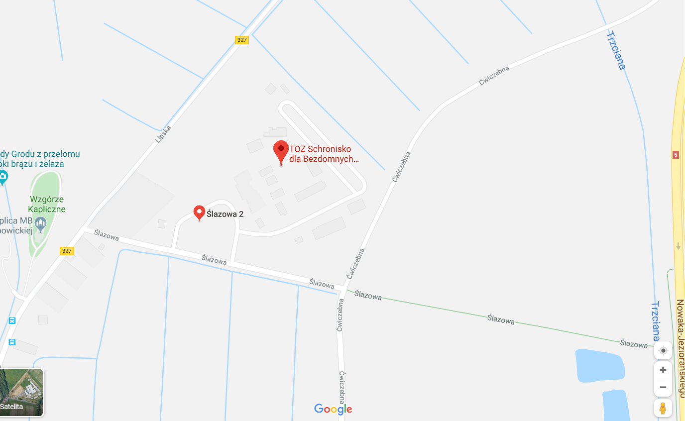

Towarzystwo Opieki nad Zwierzętami w Polsce Schronisko dla Bezdomnych Zwierząt we Wrocławiu
ul. Ślazowa 2
51-007 Wrocław
NIP 8992318978
KRS 0000154454
biuro@schroniskowroclaw.pl
+48 71 362 56 74
+ 48 501 334 268 - kierowca pogotowia

Kontakt dla mediów oraz w sprawie współpracy:
RZECZNIK SCHRONISKA Aleksandra Cukier
e-mail: schronisko.ola@gmail.com